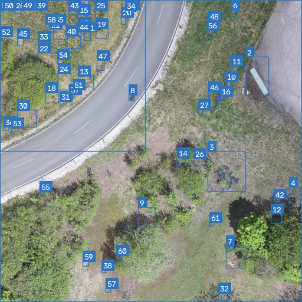

Multi-Agent Camouflage Detection — Candidate Results
Candidate output image

Candidate information
H0: camouflage hypothesis. H1: ordinary-object hypothesis. H2: no-object hypothesis. These values are model estimates, not verified ground truth.
| ID | Decision | Suspicion | H0 | H1 | H2 | Rule check | Flags | Explanation |
|---|---|---|---|---|---|---|---|---|
| 1 | CAMOUFLAGED OBJECT | 63.8% | 63.8% | 32.8% | 3.3% | UNCERTAIN - REVIEW | WEAK_BAYES_FACTOR | Hypothesis test: best=H0, BF over H1 = 2.3 (not decisive); consistent with ['H0', 'H1']. Bayesian posterior: P(H0)=0.672, P(H1)=0.328, P(H2)=0.000. Metacognition flags: ['WEAK_BAYES_FACTOR']. Best hypothesis does not clearly beat the runner-up. |
| 2 | UNCERTAIN - REVIEW | 33.1% | 33.1% | 48.6% | 18.3% | UNCERTAIN - REVIEW | HIGH_CONFLICT, MODERATE_UNCERTAINTY, MISSING_EVIDENCE | Hypothesis test: best=H1, BF over H0 = 3.8 (decisive); consistent with ['H0', 'H1']. Bayesian posterior: P(H0)=0.328, P(H1)=0.672, P(H2)=0.000. Metacognition flags: ['HIGH_CONFLICT', 'MODERATE_UNCERTAINTY', 'MISSING_EVIDENCE']. Agents disagree strongly (conflict=0.98). Only 2/3 agents reported. |
| 3 | UNCERTAIN - REVIEW | 29.7% | 29.7% | 48.7% | 21.7% | UNCERTAIN - REVIEW | HIGH_CONFLICT, MODERATE_UNCERTAINTY, MISSING_EVIDENCE | Hypothesis test: best=H1, BF over H0 = 8.8 (decisive); consistent with ['H0', 'H1']. Bayesian posterior: P(H0)=0.229, P(H1)=0.771, P(H2)=0.000. Metacognition flags: ['HIGH_CONFLICT', 'MODERATE_UNCERTAINTY', 'MISSING_EVIDENCE']. Agents disagree strongly (conflict=0.98). Only 1/3 agents reported. |
| 4 | UNCERTAIN - REVIEW | 31.4% | 31.4% | 47.0% | 21.7% | UNCERTAIN - REVIEW | HIGH_CONFLICT, MODERATE_UNCERTAINTY, MISSING_EVIDENCE | Hypothesis test: best=H1, BF over H0 = 8.6 (decisive); consistent with ['H0', 'H1']. Bayesian posterior: P(H0)=0.277, P(H1)=0.723, P(H2)=0.000. Metacognition flags: ['HIGH_CONFLICT', 'MODERATE_UNCERTAINTY', 'MISSING_EVIDENCE']. Agents disagree strongly (conflict=0.92). Only 1/3 agents reported. |
| 5 | UNCERTAIN - REVIEW | 38.6% | 38.6% | 39.8% | 21.7% | UNCERTAIN - REVIEW | HIGH_CONFLICT, MODERATE_UNCERTAINTY, MISSING_EVIDENCE, WEAK_BAYES_FACTOR, CAMO_VS_ORDINARY_CONFUSION, NARROW_MARGIN | Hypothesis test: best=H1, BF over H0 = 1.1 (not decisive); consistent with ['H0', 'H1']. Bayesian posterior: P(H0)=0.483, P(H1)=0.517, P(H2)=0.000. Metacognition flags: ['HIGH_CONFLICT', 'MODERATE_UNCERTAINTY', 'MISSING_EVIDENCE', 'WEAK_BAYES_FACTOR', 'CAMO_VS_ORDINARY_CONFUSION', 'NARROW_MARGIN']. Agents disagree strongly (conflict=0.83). Only 2/3 agents reported. Best hypothesis does not clearly beat the runner-up. Cannot separate camouflaged from ordinary object. |
| 6 | UNCERTAIN - REVIEW | 39.6% | 39.6% | 35.4% | 25.0% | UNCERTAIN - REVIEW | HIGH_CONFLICT, MODERATE_UNCERTAINTY, MISSING_EVIDENCE, WEAK_BAYES_FACTOR, CAMO_VS_ORDINARY_CONFUSION | Hypothesis test: best=H0, BF over H1 = 2.0 (not decisive); consistent with ['H0', 'H1']. Bayesian posterior: P(H0)=0.584, P(H1)=0.415, P(H2)=0.001. Metacognition flags: ['HIGH_CONFLICT', 'MODERATE_UNCERTAINTY', 'MISSING_EVIDENCE', 'WEAK_BAYES_FACTOR', 'CAMO_VS_ORDINARY_CONFUSION']. Agents disagree strongly (conflict=0.67). Only 1/3 agents reported. Best hypothesis does not clearly beat the runner-up. Cannot separate camouflaged from ordinary object. |
| 7 | CAMOUFLAGED OBJECT | 53.1% | 53.1% | 23.6% | 23.3% | UNCERTAIN - REVIEW | HIGH_CONFLICT, MODERATE_UNCERTAINTY, MISSING_EVIDENCE, OVERCONFIDENT | Hypothesis test: best=H0, BF over H1 = 6808.2 (decisive); consistent with ['H0']. Bayesian posterior: P(H0)=0.991, P(H1)=0.009, P(H2)=0.000. Metacognition flags: ['HIGH_CONFLICT', 'MODERATE_UNCERTAINTY', 'MISSING_EVIDENCE', 'OVERCONFIDENT']. Agents disagree strongly (conflict=0.74). Only 2/3 agents reported. Belief is extreme despite shaky evidence; tempered. |
| 8 | CAMOUFLAGED OBJECT | 53.3% | 53.3% | 23.4% | 23.3% | UNCERTAIN - REVIEW | HIGH_CONFLICT, MODERATE_UNCERTAINTY, MISSING_EVIDENCE, OVERCONFIDENT | Hypothesis test: best=H0, BF over H1 = 870447.4 (decisive); consistent with ['H0']. Bayesian posterior: P(H0)=0.999, P(H1)=0.001, P(H2)=0.000. Metacognition flags: ['HIGH_CONFLICT', 'MODERATE_UNCERTAINTY', 'MISSING_EVIDENCE', 'OVERCONFIDENT']. Agents disagree strongly (conflict=0.79). Only 2/3 agents reported. Belief is extreme despite shaky evidence; tempered. |
| 9 | UNCERTAIN - REVIEW | 46.3% | 46.3% | 32.0% | 21.7% | UNCERTAIN - REVIEW | HIGH_CONFLICT, MODERATE_UNCERTAINTY, MISSING_EVIDENCE | Hypothesis test: best=H0, BF over H1 = 6.5 (decisive); consistent with ['H0', 'H1']. Bayesian posterior: P(H0)=0.704, P(H1)=0.296, P(H2)=0.000. Metacognition flags: ['HIGH_CONFLICT', 'MODERATE_UNCERTAINTY', 'MISSING_EVIDENCE']. Agents disagree strongly (conflict=0.82). Only 1/3 agents reported. |
| 10 | UNCERTAIN - REVIEW | 46.2% | 46.2% | 32.1% | 21.7% | UNCERTAIN - REVIEW | HIGH_CONFLICT, MODERATE_UNCERTAINTY, MISSING_EVIDENCE | Hypothesis test: best=H0, BF over H1 = 6.3 (decisive); consistent with ['H0', 'H1']. Bayesian posterior: P(H0)=0.702, P(H1)=0.298, P(H2)=0.000. Metacognition flags: ['HIGH_CONFLICT', 'MODERATE_UNCERTAINTY', 'MISSING_EVIDENCE']. Agents disagree strongly (conflict=0.81). Only 1/3 agents reported. |
| 11 | UNCERTAIN - REVIEW | 46.1% | 46.1% | 32.2% | 21.7% | UNCERTAIN - REVIEW | HIGH_CONFLICT, MODERATE_UNCERTAINTY, MISSING_EVIDENCE | Hypothesis test: best=H0, BF over H1 = 6.0 (decisive); consistent with ['H0', 'H1']. Bayesian posterior: P(H0)=0.698, P(H1)=0.302, P(H2)=0.000. Metacognition flags: ['HIGH_CONFLICT', 'MODERATE_UNCERTAINTY', 'MISSING_EVIDENCE']. Agents disagree strongly (conflict=0.80). Only 1/3 agents reported. |
| 12 | UNCERTAIN - REVIEW | 45.8% | 45.8% | 32.5% | 21.7% | UNCERTAIN - REVIEW | HIGH_CONFLICT, MODERATE_UNCERTAINTY, MISSING_EVIDENCE | Hypothesis test: best=H0, BF over H1 = 5.5 (decisive); consistent with ['H0', 'H1']. Bayesian posterior: P(H0)=0.690, P(H1)=0.310, P(H2)=0.000. Metacognition flags: ['HIGH_CONFLICT', 'MODERATE_UNCERTAINTY', 'MISSING_EVIDENCE']. Agents disagree strongly (conflict=0.79). Only 1/3 agents reported. |
| 13 | UNCERTAIN - REVIEW | 45.6% | 45.6% | 32.8% | 21.7% | UNCERTAIN - REVIEW | HIGH_CONFLICT, MODERATE_UNCERTAINTY, MISSING_EVIDENCE | Hypothesis test: best=H0, BF over H1 = 5.1 (decisive); consistent with ['H0', 'H1']. Bayesian posterior: P(H0)=0.683, P(H1)=0.317, P(H2)=0.000. Metacognition flags: ['HIGH_CONFLICT', 'MODERATE_UNCERTAINTY', 'MISSING_EVIDENCE']. Agents disagree strongly (conflict=0.78). Only 1/3 agents reported. |
| 14 | UNCERTAIN - REVIEW | 45.5% | 45.5% | 32.8% | 21.7% | UNCERTAIN - REVIEW | HIGH_CONFLICT, MODERATE_UNCERTAINTY, MISSING_EVIDENCE | Hypothesis test: best=H0, BF over H1 = 5.1 (decisive); consistent with ['H0', 'H1']. Bayesian posterior: P(H0)=0.682, P(H1)=0.318, P(H2)=0.000. Metacognition flags: ['HIGH_CONFLICT', 'MODERATE_UNCERTAINTY', 'MISSING_EVIDENCE']. Agents disagree strongly (conflict=0.78). Only 1/3 agents reported. |
| 15 | UNCERTAIN - REVIEW | 45.4% | 45.4% | 33.0% | 21.7% | UNCERTAIN - REVIEW | HIGH_CONFLICT, MODERATE_UNCERTAINTY, MISSING_EVIDENCE | Hypothesis test: best=H0, BF over H1 = 4.8 (decisive); consistent with ['H0', 'H1']. Bayesian posterior: P(H0)=0.677, P(H1)=0.323, P(H2)=0.000. Metacognition flags: ['HIGH_CONFLICT', 'MODERATE_UNCERTAINTY', 'MISSING_EVIDENCE']. Agents disagree strongly (conflict=0.77). Only 1/3 agents reported. |
| 16 | UNCERTAIN - REVIEW | 45.3% | 45.3% | 33.0% | 21.7% | UNCERTAIN - REVIEW | HIGH_CONFLICT, MODERATE_UNCERTAINTY, MISSING_EVIDENCE | Hypothesis test: best=H0, BF over H1 = 4.8 (decisive); consistent with ['H0', 'H1']. Bayesian posterior: P(H0)=0.676, P(H1)=0.324, P(H2)=0.000. Metacognition flags: ['HIGH_CONFLICT', 'MODERATE_UNCERTAINTY', 'MISSING_EVIDENCE']. Agents disagree strongly (conflict=0.77). Only 1/3 agents reported. |
| 17 | UNCERTAIN - REVIEW | 45.3% | 45.3% | 33.0% | 21.7% | UNCERTAIN - REVIEW | HIGH_CONFLICT, MODERATE_UNCERTAINTY, MISSING_EVIDENCE | Hypothesis test: best=H0, BF over H1 = 4.8 (decisive); consistent with ['H0', 'H1']. Bayesian posterior: P(H0)=0.676, P(H1)=0.324, P(H2)=0.000. Metacognition flags: ['HIGH_CONFLICT', 'MODERATE_UNCERTAINTY', 'MISSING_EVIDENCE']. Agents disagree strongly (conflict=0.77). Only 1/3 agents reported. |
| 18 | UNCERTAIN - REVIEW | 45.3% | 45.3% | 33.0% | 21.7% | UNCERTAIN - REVIEW | HIGH_CONFLICT, MODERATE_UNCERTAINTY, MISSING_EVIDENCE | Hypothesis test: best=H0, BF over H1 = 4.7 (decisive); consistent with ['H0', 'H1']. Bayesian posterior: P(H0)=0.675, P(H1)=0.325, P(H2)=0.000. Metacognition flags: ['HIGH_CONFLICT', 'MODERATE_UNCERTAINTY', 'MISSING_EVIDENCE']. Agents disagree strongly (conflict=0.77). Only 1/3 agents reported. |
| 19 | UNCERTAIN - REVIEW | 45.2% | 45.2% | 33.1% | 21.7% | UNCERTAIN - REVIEW | HIGH_CONFLICT, MODERATE_UNCERTAINTY, MISSING_EVIDENCE | Hypothesis test: best=H0, BF over H1 = 4.6 (decisive); consistent with ['H0', 'H1']. Bayesian posterior: P(H0)=0.673, P(H1)=0.327, P(H2)=0.000. Metacognition flags: ['HIGH_CONFLICT', 'MODERATE_UNCERTAINTY', 'MISSING_EVIDENCE']. Agents disagree strongly (conflict=0.77). Only 1/3 agents reported. |
| 20 | UNCERTAIN - REVIEW | 45.1% | 45.1% | 33.3% | 21.7% | UNCERTAIN - REVIEW | HIGH_CONFLICT, MODERATE_UNCERTAINTY, MISSING_EVIDENCE | Hypothesis test: best=H0, BF over H1 = 4.4 (decisive); consistent with ['H0', 'H1']. Bayesian posterior: P(H0)=0.669, P(H1)=0.331, P(H2)=0.000. Metacognition flags: ['HIGH_CONFLICT', 'MODERATE_UNCERTAINTY', 'MISSING_EVIDENCE']. Agents disagree strongly (conflict=0.76). Only 1/3 agents reported. |
| 21 | UNCERTAIN - REVIEW | 45.1% | 45.1% | 33.3% | 21.7% | UNCERTAIN - REVIEW | HIGH_CONFLICT, MODERATE_UNCERTAINTY, MISSING_EVIDENCE | Hypothesis test: best=H0, BF over H1 = 4.4 (decisive); consistent with ['H0', 'H1']. Bayesian posterior: P(H0)=0.668, P(H1)=0.332, P(H2)=0.000. Metacognition flags: ['HIGH_CONFLICT', 'MODERATE_UNCERTAINTY', 'MISSING_EVIDENCE']. Agents disagree strongly (conflict=0.76). Only 1/3 agents reported. |
| 22 | UNCERTAIN - REVIEW | 45.0% | 45.0% | 33.3% | 21.7% | UNCERTAIN - REVIEW | HIGH_CONFLICT, MODERATE_UNCERTAINTY, MISSING_EVIDENCE | Hypothesis test: best=H0, BF over H1 = 4.4 (decisive); consistent with ['H0', 'H1']. Bayesian posterior: P(H0)=0.668, P(H1)=0.332, P(H2)=0.000. Metacognition flags: ['HIGH_CONFLICT', 'MODERATE_UNCERTAINTY', 'MISSING_EVIDENCE']. Agents disagree strongly (conflict=0.76). Only 1/3 agents reported. |
| 23 | UNCERTAIN - REVIEW | 45.0% | 45.0% | 33.3% | 21.7% | UNCERTAIN - REVIEW | HIGH_CONFLICT, MODERATE_UNCERTAINTY, MISSING_EVIDENCE | Hypothesis test: best=H0, BF over H1 = 4.4 (decisive); consistent with ['H0', 'H1']. Bayesian posterior: P(H0)=0.668, P(H1)=0.332, P(H2)=0.000. Metacognition flags: ['HIGH_CONFLICT', 'MODERATE_UNCERTAINTY', 'MISSING_EVIDENCE']. Agents disagree strongly (conflict=0.76). Only 1/3 agents reported. |
| 24 | UNCERTAIN - REVIEW | 45.0% | 45.0% | 33.4% | 21.7% | UNCERTAIN - REVIEW | HIGH_CONFLICT, MODERATE_UNCERTAINTY, MISSING_EVIDENCE | Hypothesis test: best=H0, BF over H1 = 4.3 (decisive); consistent with ['H0', 'H1']. Bayesian posterior: P(H0)=0.666, P(H1)=0.334, P(H2)=0.000. Metacognition flags: ['HIGH_CONFLICT', 'MODERATE_UNCERTAINTY', 'MISSING_EVIDENCE']. Agents disagree strongly (conflict=0.76). Only 1/3 agents reported. |
| 25 | UNCERTAIN - REVIEW | 45.0% | 45.0% | 33.4% | 21.7% | UNCERTAIN - REVIEW | HIGH_CONFLICT, MODERATE_UNCERTAINTY, MISSING_EVIDENCE | Hypothesis test: best=H0, BF over H1 = 4.3 (decisive); consistent with ['H0', 'H1']. Bayesian posterior: P(H0)=0.666, P(H1)=0.334, P(H2)=0.000. Metacognition flags: ['HIGH_CONFLICT', 'MODERATE_UNCERTAINTY', 'MISSING_EVIDENCE']. Agents disagree strongly (conflict=0.76). Only 1/3 agents reported. |
| 26 | UNCERTAIN - REVIEW | 44.9% | 44.9% | 33.4% | 21.7% | UNCERTAIN - REVIEW | HIGH_CONFLICT, MODERATE_UNCERTAINTY, MISSING_EVIDENCE | Hypothesis test: best=H0, BF over H1 = 4.2 (decisive); consistent with ['H0', 'H1']. Bayesian posterior: P(H0)=0.665, P(H1)=0.335, P(H2)=0.000. Metacognition flags: ['HIGH_CONFLICT', 'MODERATE_UNCERTAINTY', 'MISSING_EVIDENCE']. Agents disagree strongly (conflict=0.75). Only 1/3 agents reported. |
| 27 | UNCERTAIN - REVIEW | 44.9% | 44.9% | 33.4% | 21.7% | UNCERTAIN - REVIEW | HIGH_CONFLICT, MODERATE_UNCERTAINTY, MISSING_EVIDENCE | Hypothesis test: best=H0, BF over H1 = 4.2 (decisive); consistent with ['H0', 'H1']. Bayesian posterior: P(H0)=0.665, P(H1)=0.335, P(H2)=0.000. Metacognition flags: ['HIGH_CONFLICT', 'MODERATE_UNCERTAINTY', 'MISSING_EVIDENCE']. Agents disagree strongly (conflict=0.75). Only 1/3 agents reported. |
| 28 | UNCERTAIN - REVIEW | 44.9% | 44.9% | 33.4% | 21.7% | UNCERTAIN - REVIEW | HIGH_CONFLICT, MODERATE_UNCERTAINTY, MISSING_EVIDENCE | Hypothesis test: best=H0, BF over H1 = 4.2 (decisive); consistent with ['H0', 'H1']. Bayesian posterior: P(H0)=0.664, P(H1)=0.335, P(H2)=0.000. Metacognition flags: ['HIGH_CONFLICT', 'MODERATE_UNCERTAINTY', 'MISSING_EVIDENCE']. Agents disagree strongly (conflict=0.75). Only 1/3 agents reported. |
| 29 | UNCERTAIN - REVIEW | 44.9% | 44.9% | 33.4% | 21.7% | UNCERTAIN - REVIEW | HIGH_CONFLICT, MODERATE_UNCERTAINTY, MISSING_EVIDENCE | Hypothesis test: best=H0, BF over H1 = 4.2 (decisive); consistent with ['H0', 'H1']. Bayesian posterior: P(H0)=0.664, P(H1)=0.336, P(H2)=0.000. Metacognition flags: ['HIGH_CONFLICT', 'MODERATE_UNCERTAINTY', 'MISSING_EVIDENCE']. Agents disagree strongly (conflict=0.75). Only 1/3 agents reported. |
| 30 | UNCERTAIN - REVIEW | 44.9% | 44.9% | 33.5% | 21.7% | UNCERTAIN - REVIEW | HIGH_CONFLICT, MODERATE_UNCERTAINTY, MISSING_EVIDENCE | Hypothesis test: best=H0, BF over H1 = 4.1 (decisive); consistent with ['H0', 'H1']. Bayesian posterior: P(H0)=0.662, P(H1)=0.337, P(H2)=0.000. Metacognition flags: ['HIGH_CONFLICT', 'MODERATE_UNCERTAINTY', 'MISSING_EVIDENCE']. Agents disagree strongly (conflict=0.75). Only 1/3 agents reported. |
| 31 | UNCERTAIN - REVIEW | 44.8% | 44.8% | 33.5% | 21.7% | UNCERTAIN - REVIEW | HIGH_CONFLICT, MODERATE_UNCERTAINTY, MISSING_EVIDENCE | Hypothesis test: best=H0, BF over H1 = 4.1 (decisive); consistent with ['H0', 'H1']. Bayesian posterior: P(H0)=0.661, P(H1)=0.338, P(H2)=0.000. Metacognition flags: ['HIGH_CONFLICT', 'MODERATE_UNCERTAINTY', 'MISSING_EVIDENCE']. Agents disagree strongly (conflict=0.75). Only 1/3 agents reported. |
| 32 | UNCERTAIN - REVIEW | 44.8% | 44.8% | 33.5% | 21.7% | UNCERTAIN - REVIEW | HIGH_CONFLICT, MODERATE_UNCERTAINTY, MISSING_EVIDENCE | Hypothesis test: best=H0, BF over H1 = 4.1 (decisive); consistent with ['H0', 'H1']. Bayesian posterior: P(H0)=0.661, P(H1)=0.339, P(H2)=0.000. Metacognition flags: ['HIGH_CONFLICT', 'MODERATE_UNCERTAINTY', 'MISSING_EVIDENCE']. Agents disagree strongly (conflict=0.75). Only 1/3 agents reported. |
| 33 | UNCERTAIN - REVIEW | 44.8% | 44.8% | 33.6% | 21.7% | UNCERTAIN - REVIEW | HIGH_CONFLICT, MODERATE_UNCERTAINTY, MISSING_EVIDENCE | Hypothesis test: best=H0, BF over H1 = 4.0 (decisive); consistent with ['H0', 'H1']. Bayesian posterior: P(H0)=0.660, P(H1)=0.340, P(H2)=0.000. Metacognition flags: ['HIGH_CONFLICT', 'MODERATE_UNCERTAINTY', 'MISSING_EVIDENCE']. Agents disagree strongly (conflict=0.75). Only 1/3 agents reported. |
| 34 | UNCERTAIN - REVIEW | 44.7% | 44.7% | 33.6% | 21.7% | UNCERTAIN - REVIEW | HIGH_CONFLICT, MODERATE_UNCERTAINTY, MISSING_EVIDENCE | Hypothesis test: best=H0, BF over H1 = 4.0 (decisive); consistent with ['H0', 'H1']. Bayesian posterior: P(H0)=0.659, P(H1)=0.341, P(H2)=0.000. Metacognition flags: ['HIGH_CONFLICT', 'MODERATE_UNCERTAINTY', 'MISSING_EVIDENCE']. Agents disagree strongly (conflict=0.75). Only 1/3 agents reported. |
| 35 | UNCERTAIN - REVIEW | 44.7% | 44.7% | 33.7% | 21.7% | UNCERTAIN - REVIEW | HIGH_CONFLICT, MODERATE_UNCERTAINTY, MISSING_EVIDENCE | Hypothesis test: best=H0, BF over H1 = 3.9 (decisive); consistent with ['H0', 'H1']. Bayesian posterior: P(H0)=0.658, P(H1)=0.342, P(H2)=0.000. Metacognition flags: ['HIGH_CONFLICT', 'MODERATE_UNCERTAINTY', 'MISSING_EVIDENCE']. Agents disagree strongly (conflict=0.74). Only 1/3 agents reported. |
| 36 | UNCERTAIN - REVIEW | 44.5% | 44.5% | 33.8% | 21.7% | UNCERTAIN - REVIEW | HIGH_CONFLICT, MODERATE_UNCERTAINTY, MISSING_EVIDENCE | Hypothesis test: best=H0, BF over H1 = 3.8 (decisive); consistent with ['H0', 'H1']. Bayesian posterior: P(H0)=0.654, P(H1)=0.346, P(H2)=0.000. Metacognition flags: ['HIGH_CONFLICT', 'MODERATE_UNCERTAINTY', 'MISSING_EVIDENCE']. Agents disagree strongly (conflict=0.74). Only 1/3 agents reported. |
| 37 | UNCERTAIN - REVIEW | 44.5% | 44.5% | 33.8% | 21.7% | UNCERTAIN - REVIEW | HIGH_CONFLICT, MODERATE_UNCERTAINTY, MISSING_EVIDENCE | Hypothesis test: best=H0, BF over H1 = 3.8 (decisive); consistent with ['H0', 'H1']. Bayesian posterior: P(H0)=0.653, P(H1)=0.347, P(H2)=0.000. Metacognition flags: ['HIGH_CONFLICT', 'MODERATE_UNCERTAINTY', 'MISSING_EVIDENCE']. Agents disagree strongly (conflict=0.74). Only 1/3 agents reported. |
| 38 | UNCERTAIN - REVIEW | 44.5% | 44.5% | 33.8% | 21.7% | UNCERTAIN - REVIEW | HIGH_CONFLICT, MODERATE_UNCERTAINTY, MISSING_EVIDENCE | Hypothesis test: best=H0, BF over H1 = 3.8 (decisive); consistent with ['H0', 'H1']. Bayesian posterior: P(H0)=0.653, P(H1)=0.347, P(H2)=0.000. Metacognition flags: ['HIGH_CONFLICT', 'MODERATE_UNCERTAINTY', 'MISSING_EVIDENCE']. Agents disagree strongly (conflict=0.74). Only 1/3 agents reported. |
| 39 | UNCERTAIN - REVIEW | 44.5% | 44.5% | 33.9% | 21.7% | UNCERTAIN - REVIEW | HIGH_CONFLICT, MODERATE_UNCERTAINTY, MISSING_EVIDENCE | Hypothesis test: best=H0, BF over H1 = 3.7 (decisive); consistent with ['H0', 'H1']. Bayesian posterior: P(H0)=0.652, P(H1)=0.348, P(H2)=0.000. Metacognition flags: ['HIGH_CONFLICT', 'MODERATE_UNCERTAINTY', 'MISSING_EVIDENCE']. Agents disagree strongly (conflict=0.74). Only 1/3 agents reported. |
| 40 | UNCERTAIN - REVIEW | 44.5% | 44.5% | 33.9% | 21.7% | UNCERTAIN - REVIEW | HIGH_CONFLICT, MODERATE_UNCERTAINTY, MISSING_EVIDENCE | Hypothesis test: best=H0, BF over H1 = 3.7 (decisive); consistent with ['H0', 'H1']. Bayesian posterior: P(H0)=0.652, P(H1)=0.348, P(H2)=0.000. Metacognition flags: ['HIGH_CONFLICT', 'MODERATE_UNCERTAINTY', 'MISSING_EVIDENCE']. Agents disagree strongly (conflict=0.74). Only 1/3 agents reported. |
| 41 | UNCERTAIN - REVIEW | 44.5% | 44.5% | 33.9% | 21.7% | UNCERTAIN - REVIEW | HIGH_CONFLICT, MODERATE_UNCERTAINTY, MISSING_EVIDENCE | Hypothesis test: best=H0, BF over H1 = 3.7 (decisive); consistent with ['H0', 'H1']. Bayesian posterior: P(H0)=0.652, P(H1)=0.348, P(H2)=0.000. Metacognition flags: ['HIGH_CONFLICT', 'MODERATE_UNCERTAINTY', 'MISSING_EVIDENCE']. Agents disagree strongly (conflict=0.74). Only 1/3 agents reported. |
| 42 | UNCERTAIN - REVIEW | 44.4% | 44.4% | 33.9% | 21.7% | UNCERTAIN - REVIEW | HIGH_CONFLICT, MODERATE_UNCERTAINTY, MISSING_EVIDENCE, CAMO_VS_ORDINARY_CONFUSION | Hypothesis test: best=H0, BF over H1 = 3.6 (decisive); consistent with ['H0', 'H1']. Bayesian posterior: P(H0)=0.650, P(H1)=0.350, P(H2)=0.000. Metacognition flags: ['HIGH_CONFLICT', 'MODERATE_UNCERTAINTY', 'MISSING_EVIDENCE', 'CAMO_VS_ORDINARY_CONFUSION']. Agents disagree strongly (conflict=0.73). Only 1/3 agents reported. Cannot separate camouflaged from ordinary object. |
| 43 | UNCERTAIN - REVIEW | 44.4% | 44.4% | 33.9% | 21.7% | UNCERTAIN - REVIEW | HIGH_CONFLICT, MODERATE_UNCERTAINTY, MISSING_EVIDENCE, CAMO_VS_ORDINARY_CONFUSION | Hypothesis test: best=H0, BF over H1 = 3.6 (decisive); consistent with ['H0', 'H1']. Bayesian posterior: P(H0)=0.649, P(H1)=0.351, P(H2)=0.000. Metacognition flags: ['HIGH_CONFLICT', 'MODERATE_UNCERTAINTY', 'MISSING_EVIDENCE', 'CAMO_VS_ORDINARY_CONFUSION']. Agents disagree strongly (conflict=0.73). Only 1/3 agents reported. Cannot separate camouflaged from ordinary object. |
| 44 | UNCERTAIN - REVIEW | 44.4% | 44.4% | 34.0% | 21.7% | UNCERTAIN - REVIEW | HIGH_CONFLICT, MODERATE_UNCERTAINTY, MISSING_EVIDENCE, CAMO_VS_ORDINARY_CONFUSION | Hypothesis test: best=H0, BF over H1 = 3.6 (decisive); consistent with ['H0', 'H1']. Bayesian posterior: P(H0)=0.648, P(H1)=0.352, P(H2)=0.000. Metacognition flags: ['HIGH_CONFLICT', 'MODERATE_UNCERTAINTY', 'MISSING_EVIDENCE', 'CAMO_VS_ORDINARY_CONFUSION']. Agents disagree strongly (conflict=0.73). Only 1/3 agents reported. Cannot separate camouflaged from ordinary object. |
| 45 | UNCERTAIN - REVIEW | 44.3% | 44.3% | 34.0% | 21.7% | UNCERTAIN - REVIEW | HIGH_CONFLICT, MODERATE_UNCERTAINTY, MISSING_EVIDENCE, CAMO_VS_ORDINARY_CONFUSION | Hypothesis test: best=H0, BF over H1 = 3.6 (decisive); consistent with ['H0', 'H1']. Bayesian posterior: P(H0)=0.648, P(H1)=0.352, P(H2)=0.000. Metacognition flags: ['HIGH_CONFLICT', 'MODERATE_UNCERTAINTY', 'MISSING_EVIDENCE', 'CAMO_VS_ORDINARY_CONFUSION']. Agents disagree strongly (conflict=0.73). Only 1/3 agents reported. Cannot separate camouflaged from ordinary object. |
| 46 | UNCERTAIN - REVIEW | 44.3% | 44.3% | 34.0% | 21.7% | UNCERTAIN - REVIEW | HIGH_CONFLICT, MODERATE_UNCERTAINTY, MISSING_EVIDENCE, CAMO_VS_ORDINARY_CONFUSION | Hypothesis test: best=H0, BF over H1 = 3.5 (decisive); consistent with ['H0', 'H1']. Bayesian posterior: P(H0)=0.646, P(H1)=0.354, P(H2)=0.000. Metacognition flags: ['HIGH_CONFLICT', 'MODERATE_UNCERTAINTY', 'MISSING_EVIDENCE', 'CAMO_VS_ORDINARY_CONFUSION']. Agents disagree strongly (conflict=0.73). Only 1/3 agents reported. Cannot separate camouflaged from ordinary object. |
| 47 | UNCERTAIN - REVIEW | 44.3% | 44.3% | 34.1% | 21.7% | UNCERTAIN - REVIEW | HIGH_CONFLICT, MODERATE_UNCERTAINTY, MISSING_EVIDENCE, CAMO_VS_ORDINARY_CONFUSION | Hypothesis test: best=H0, BF over H1 = 3.5 (decisive); consistent with ['H0', 'H1']. Bayesian posterior: P(H0)=0.646, P(H1)=0.354, P(H2)=0.000. Metacognition flags: ['HIGH_CONFLICT', 'MODERATE_UNCERTAINTY', 'MISSING_EVIDENCE', 'CAMO_VS_ORDINARY_CONFUSION']. Agents disagree strongly (conflict=0.73). Only 1/3 agents reported. Cannot separate camouflaged from ordinary object. |
| 48 | UNCERTAIN - REVIEW | 44.2% | 44.2% | 34.1% | 21.7% | UNCERTAIN - REVIEW | HIGH_CONFLICT, MODERATE_UNCERTAINTY, MISSING_EVIDENCE, CAMO_VS_ORDINARY_CONFUSION | Hypothesis test: best=H0, BF over H1 = 3.5 (decisive); consistent with ['H0', 'H1']. Bayesian posterior: P(H0)=0.645, P(H1)=0.355, P(H2)=0.000. Metacognition flags: ['HIGH_CONFLICT', 'MODERATE_UNCERTAINTY', 'MISSING_EVIDENCE', 'CAMO_VS_ORDINARY_CONFUSION']. Agents disagree strongly (conflict=0.73). Only 1/3 agents reported. Cannot separate camouflaged from ordinary object. |
| 49 | UNCERTAIN - REVIEW | 44.2% | 44.2% | 34.1% | 21.7% | UNCERTAIN - REVIEW | HIGH_CONFLICT, MODERATE_UNCERTAINTY, MISSING_EVIDENCE, CAMO_VS_ORDINARY_CONFUSION | Hypothesis test: best=H0, BF over H1 = 3.4 (decisive); consistent with ['H0', 'H1']. Bayesian posterior: P(H0)=0.644, P(H1)=0.356, P(H2)=0.000. Metacognition flags: ['HIGH_CONFLICT', 'MODERATE_UNCERTAINTY', 'MISSING_EVIDENCE', 'CAMO_VS_ORDINARY_CONFUSION']. Agents disagree strongly (conflict=0.73). Only 1/3 agents reported. Cannot separate camouflaged from ordinary object. |
| 50 | UNCERTAIN - REVIEW | 44.0% | 44.0% | 34.4% | 21.7% | UNCERTAIN - REVIEW | HIGH_CONFLICT, MODERATE_UNCERTAINTY, MISSING_EVIDENCE, CAMO_VS_ORDINARY_CONFUSION | Hypothesis test: best=H0, BF over H1 = 3.2 (decisive); consistent with ['H0', 'H1']. Bayesian posterior: P(H0)=0.637, P(H1)=0.363, P(H2)=0.000. Metacognition flags: ['HIGH_CONFLICT', 'MODERATE_UNCERTAINTY', 'MISSING_EVIDENCE', 'CAMO_VS_ORDINARY_CONFUSION']. Agents disagree strongly (conflict=0.72). Only 1/3 agents reported. Cannot separate camouflaged from ordinary object. |
| 51 | UNCERTAIN - REVIEW | 43.9% | 43.9% | 34.4% | 21.7% | UNCERTAIN - REVIEW | HIGH_CONFLICT, MODERATE_UNCERTAINTY, MISSING_EVIDENCE, CAMO_VS_ORDINARY_CONFUSION | Hypothesis test: best=H0, BF over H1 = 3.2 (decisive); consistent with ['H0', 'H1']. Bayesian posterior: P(H0)=0.636, P(H1)=0.363, P(H2)=0.000. Metacognition flags: ['HIGH_CONFLICT', 'MODERATE_UNCERTAINTY', 'MISSING_EVIDENCE', 'CAMO_VS_ORDINARY_CONFUSION']. Agents disagree strongly (conflict=0.72). Only 1/3 agents reported. Cannot separate camouflaged from ordinary object. |
| 52 | UNCERTAIN - REVIEW | 43.9% | 43.9% | 34.4% | 21.7% | UNCERTAIN - REVIEW | HIGH_CONFLICT, MODERATE_UNCERTAINTY, MISSING_EVIDENCE, CAMO_VS_ORDINARY_CONFUSION | Hypothesis test: best=H0, BF over H1 = 3.2 (decisive); consistent with ['H0', 'H1']. Bayesian posterior: P(H0)=0.636, P(H1)=0.364, P(H2)=0.000. Metacognition flags: ['HIGH_CONFLICT', 'MODERATE_UNCERTAINTY', 'MISSING_EVIDENCE', 'CAMO_VS_ORDINARY_CONFUSION']. Agents disagree strongly (conflict=0.72). Only 1/3 agents reported. Cannot separate camouflaged from ordinary object. |
| 53 | UNCERTAIN - REVIEW | 43.9% | 43.9% | 34.4% | 21.7% | UNCERTAIN - REVIEW | HIGH_CONFLICT, MODERATE_UNCERTAINTY, MISSING_EVIDENCE, CAMO_VS_ORDINARY_CONFUSION | Hypothesis test: best=H0, BF over H1 = 3.2 (decisive); consistent with ['H0', 'H1']. Bayesian posterior: P(H0)=0.635, P(H1)=0.365, P(H2)=0.000. Metacognition flags: ['HIGH_CONFLICT', 'MODERATE_UNCERTAINTY', 'MISSING_EVIDENCE', 'CAMO_VS_ORDINARY_CONFUSION']. Agents disagree strongly (conflict=0.72). Only 1/3 agents reported. Cannot separate camouflaged from ordinary object. |
| 54 | UNCERTAIN - REVIEW | 43.8% | 43.8% | 34.5% | 21.7% | UNCERTAIN - REVIEW | HIGH_CONFLICT, MODERATE_UNCERTAINTY, MISSING_EVIDENCE, CAMO_VS_ORDINARY_CONFUSION | Hypothesis test: best=H0, BF over H1 = 3.1 (decisive); consistent with ['H0', 'H1']. Bayesian posterior: P(H0)=0.633, P(H1)=0.367, P(H2)=0.000. Metacognition flags: ['HIGH_CONFLICT', 'MODERATE_UNCERTAINTY', 'MISSING_EVIDENCE', 'CAMO_VS_ORDINARY_CONFUSION']. Agents disagree strongly (conflict=0.71). Only 1/3 agents reported. Cannot separate camouflaged from ordinary object. |
| 55 | UNCERTAIN - REVIEW | 43.8% | 43.8% | 34.5% | 21.7% | UNCERTAIN - REVIEW | HIGH_CONFLICT, MODERATE_UNCERTAINTY, MISSING_EVIDENCE, CAMO_VS_ORDINARY_CONFUSION | Hypothesis test: best=H0, BF over H1 = 3.1 (decisive); consistent with ['H0', 'H1']. Bayesian posterior: P(H0)=0.632, P(H1)=0.368, P(H2)=0.000. Metacognition flags: ['HIGH_CONFLICT', 'MODERATE_UNCERTAINTY', 'MISSING_EVIDENCE', 'CAMO_VS_ORDINARY_CONFUSION']. Agents disagree strongly (conflict=0.71). Only 1/3 agents reported. Cannot separate camouflaged from ordinary object. |
| 56 | UNCERTAIN - REVIEW | 43.7% | 43.7% | 34.6% | 21.7% | UNCERTAIN - REVIEW | HIGH_CONFLICT, MODERATE_UNCERTAINTY, MISSING_EVIDENCE, CAMO_VS_ORDINARY_CONFUSION | Hypothesis test: best=H0, BF over H1 = 3.0 (decisive); consistent with ['H0', 'H1']. Bayesian posterior: P(H0)=0.630, P(H1)=0.370, P(H2)=0.000. Metacognition flags: ['HIGH_CONFLICT', 'MODERATE_UNCERTAINTY', 'MISSING_EVIDENCE', 'CAMO_VS_ORDINARY_CONFUSION']. Agents disagree strongly (conflict=0.71). Only 1/3 agents reported. Cannot separate camouflaged from ordinary object. |
| 57 | UNCERTAIN - REVIEW | 40.7% | 40.7% | 34.3% | 25.0% | UNCERTAIN - REVIEW | HIGH_CONFLICT, MODERATE_UNCERTAINTY, MISSING_EVIDENCE, WEAK_BAYES_FACTOR, CAMO_VS_ORDINARY_CONFUSION | Hypothesis test: best=H0, BF over H1 = 2.9 (not decisive); consistent with ['H0', 'H1']. Bayesian posterior: P(H0)=0.626, P(H1)=0.374, P(H2)=0.000. Metacognition flags: ['HIGH_CONFLICT', 'MODERATE_UNCERTAINTY', 'MISSING_EVIDENCE', 'WEAK_BAYES_FACTOR', 'CAMO_VS_ORDINARY_CONFUSION']. Agents disagree strongly (conflict=0.71). Only 1/3 agents reported. Best hypothesis does not clearly beat the runner-up. Cannot separate camouflaged from ordinary object. |
| 58 | UNCERTAIN - REVIEW | 40.6% | 40.6% | 34.4% | 25.0% | UNCERTAIN - REVIEW | HIGH_CONFLICT, MODERATE_UNCERTAINTY, MISSING_EVIDENCE, WEAK_BAYES_FACTOR, CAMO_VS_ORDINARY_CONFUSION | Hypothesis test: best=H0, BF over H1 = 2.8 (not decisive); consistent with ['H0', 'H1']. Bayesian posterior: P(H0)=0.623, P(H1)=0.376, P(H2)=0.000. Metacognition flags: ['HIGH_CONFLICT', 'MODERATE_UNCERTAINTY', 'MISSING_EVIDENCE', 'WEAK_BAYES_FACTOR', 'CAMO_VS_ORDINARY_CONFUSION']. Agents disagree strongly (conflict=0.70). Only 1/3 agents reported. Best hypothesis does not clearly beat the runner-up. Cannot separate camouflaged from ordinary object. |
| 59 | UNCERTAIN - REVIEW | 40.6% | 40.6% | 34.4% | 25.0% | UNCERTAIN - REVIEW | HIGH_CONFLICT, MODERATE_UNCERTAINTY, MISSING_EVIDENCE, WEAK_BAYES_FACTOR, CAMO_VS_ORDINARY_CONFUSION | Hypothesis test: best=H0, BF over H1 = 2.8 (not decisive); consistent with ['H0', 'H1']. Bayesian posterior: P(H0)=0.622, P(H1)=0.378, P(H2)=0.000. Metacognition flags: ['HIGH_CONFLICT', 'MODERATE_UNCERTAINTY', 'MISSING_EVIDENCE', 'WEAK_BAYES_FACTOR', 'CAMO_VS_ORDINARY_CONFUSION']. Agents disagree strongly (conflict=0.70). Only 1/3 agents reported. Best hypothesis does not clearly beat the runner-up. Cannot separate camouflaged from ordinary object. |
| 60 | UNCERTAIN - REVIEW | 40.1% | 40.1% | 34.9% | 25.0% | UNCERTAIN - REVIEW | HIGH_CONFLICT, MODERATE_UNCERTAINTY, MISSING_EVIDENCE, WEAK_BAYES_FACTOR, CAMO_VS_ORDINARY_CONFUSION | Hypothesis test: best=H0, BF over H1 = 2.4 (not decisive); consistent with ['H0', 'H1']. Bayesian posterior: P(H0)=0.604, P(H1)=0.395, P(H2)=0.000. Metacognition flags: ['HIGH_CONFLICT', 'MODERATE_UNCERTAINTY', 'MISSING_EVIDENCE', 'WEAK_BAYES_FACTOR', 'CAMO_VS_ORDINARY_CONFUSION']. Agents disagree strongly (conflict=0.68). Only 1/3 agents reported. Best hypothesis does not clearly beat the runner-up. Cannot separate camouflaged from ordinary object. |
| 61 | UNCERTAIN - REVIEW | 39.5% | 39.5% | 35.5% | 25.0% | UNCERTAIN - REVIEW | HIGH_CONFLICT, MODERATE_UNCERTAINTY, MISSING_EVIDENCE, WEAK_BAYES_FACTOR, CAMO_VS_ORDINARY_CONFUSION | Hypothesis test: best=H0, BF over H1 = 1.9 (not decisive); consistent with ['H0', 'H1']. Bayesian posterior: P(H0)=0.578, P(H1)=0.421, P(H2)=0.001. Metacognition flags: ['HIGH_CONFLICT', 'MODERATE_UNCERTAINTY', 'MISSING_EVIDENCE', 'WEAK_BAYES_FACTOR', 'CAMO_VS_ORDINARY_CONFUSION']. Agents disagree strongly (conflict=0.66). Only 1/3 agents reported. Best hypothesis does not clearly beat the runner-up. Cannot separate camouflaged from ordinary object. |